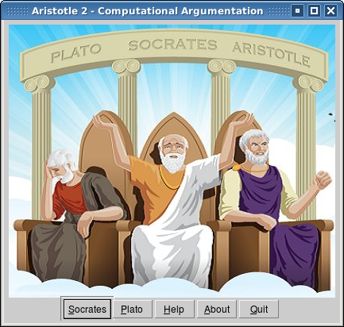

Aristotle - Computational Argumentation

Download:
Windows Executable (64x/86x)
Click Here
Linux/Unix-Like (64x/86x)
Click Here
Read License
Links:
Article on JCC
College Bulletin
Git Repository
More About:
Argumentation
Authors:
Silvio do Lago Pereira
Luiz Felipe Zarco dos Santos
Lucio Nunes de Lira
Copyright (c) 2013-2016